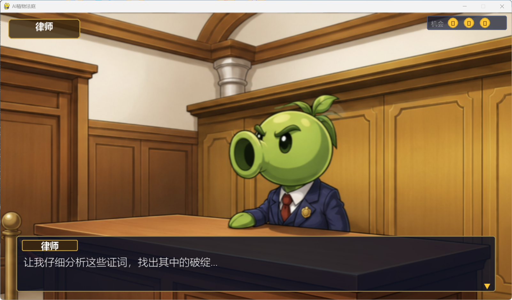
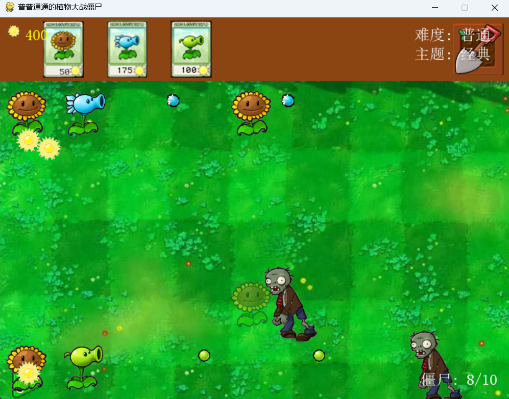
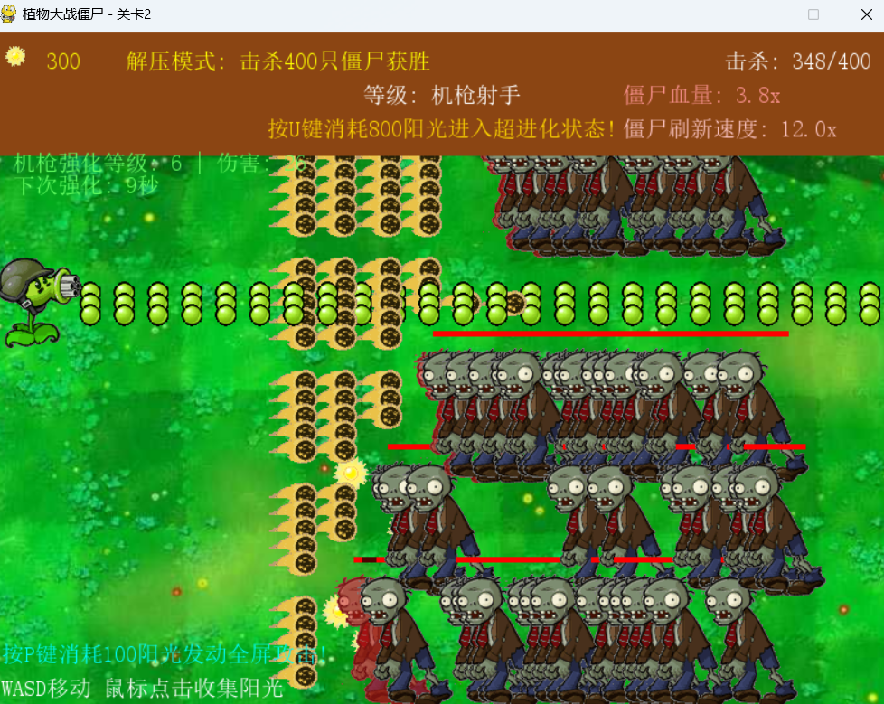
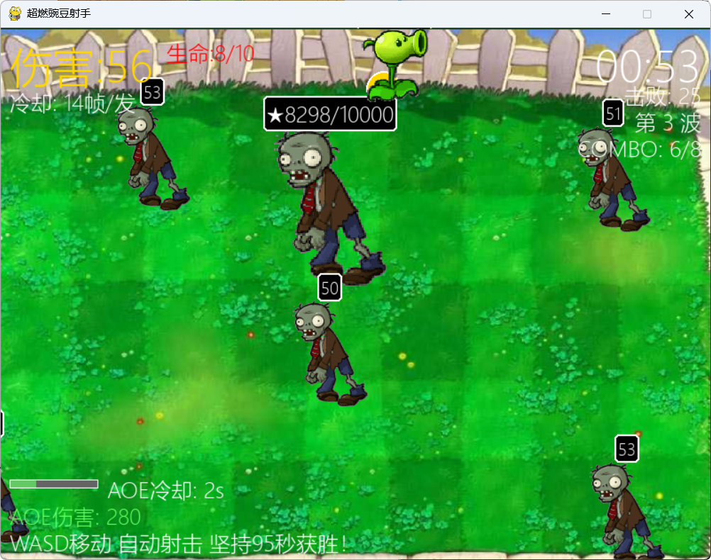
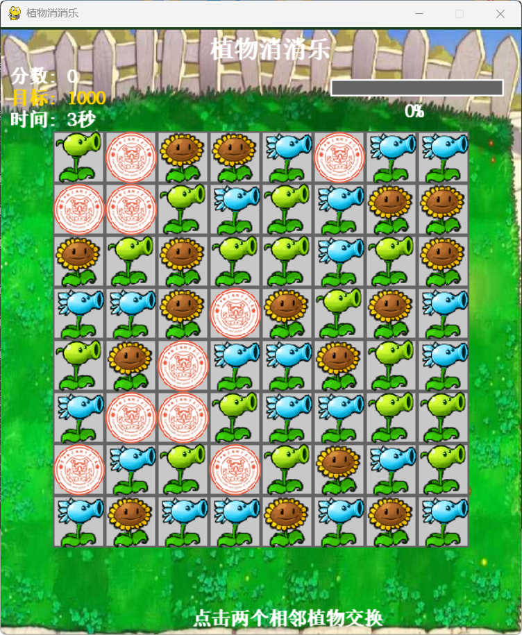
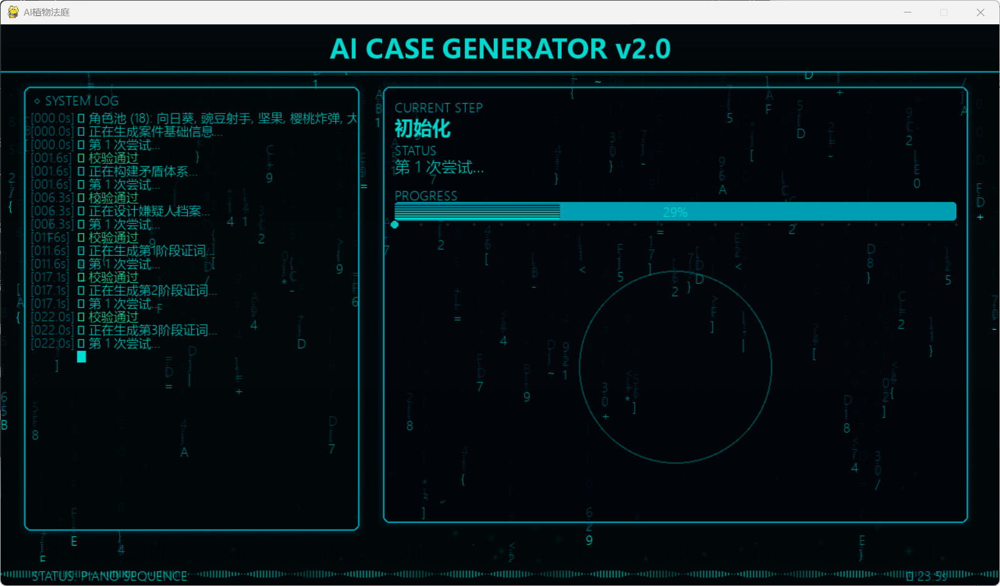

固定规则，
动态案件。
AI 植物法庭想讨论的不是“加了一个 AI 功能”，而是一个更核心的设计问题。
当游戏规则保持不变，而游戏内容能够动态生成时，游戏是否能够获得更高的扩展性与重玩价值？
固定规则×动态内容=更高重玩价值？
塔防、射击、Roguelike、三消、AI 法庭 —— 一个项目，五套完全不同的玩法表达。

AI 法庭
经典塔防
射击挑战
数字战力
植物消消乐一个用 Python + Pygame 构建的植物大战僵尸同人游戏合集，将经典塔防拓展为五种风格迥异的独立游戏。
以《植物大战僵尸》为蓝本，保留植物与僵尸核心设定，将玩法拓展至五个方向。由统一启动器管理，包含 5 种独立模式、3 套视觉主题、AI 驱动的法庭案件生成器 及丰富的音效音乐系统。
技术栈：Python 3 + Pygame + DeepSeek API + Requests。模块化架构，每种模式独立维护。
塔防·射击·Roguelike·三消·法庭
经典 / 宇宙 / 哈基米
DeepSeek 自动生成法庭案件
多首 BGM + 分级音效系统
三步上手，开箱即玩。
| 项目 | 要求 |
|---|---|
| Python | 3.6+ |
| pygame | 2.0+（游戏引擎） |
| requests | 任意版本（AI 案件生成器用） |
| 操作系统 | Windows / macOS / Linux |
💡 只玩前四种模式无需 requests
安装依赖：
pip install pygame requests国内镜像：pip install -i https://pypi.tuna.tsinghua.edu.cn/simple pygame requests
下载项目到本地
运行：
python launcher.pymenu.png，标题浮动动画未配置 Key 时自动加载预设案件。
set DEEPSEEK_API_KEY=sk-your-key
# 或修改 ai/maker7.py 中的 API_KEY| 植物 | 键 | 价格 | 生命 | 功能 |
|---|---|---|---|---|
| 向日葵 | 1 | 50 | 100 | 每 3 秒产生一个阳光 |
| 寒冰射手 | 2 | 175 | 100 | 寒冰子弹，减速 3 秒 |
| 豌豆射手 | 3 | 100 | 100 | 自动攻击同行僵尸 |
| 坚果墙 | 4 | 100 | 300 | 高防御，被吃死时爆炸反伤 |
| 铲子 | 5 | — | — | 移除植物，退还 50% 阳光 |
| 难度 | 僵尸总数 | 速度 |
|---|---|---|
| 简单 | 5 | 0.3 |
| 普通 | 10 | 0.5 |
| 困难 | 15 | 0.7 |
| 测试 | 1 | 1.0 |
| 主题 | 背景 | 子弹 |
|---|---|---|
| 经典 | back.png | 绿色豌豆 |
| 宇宙 | space.png | 绿色豌豆 |
| 哈基米 | gback.png | 金色 g.png |
本模式的全部代码集中在 assets/mode_1.py（约 950 行），由启动器 launcher.py 通过 sys.path.insert(0, 'assets') 注入路径后导入 main(difficulty, theme)。
| 调用方 | 代码 | 说明 |
|---|---|---|
| launcher.py L572 | from mode_1 import main | 动态导入模式模块 |
| launcher.py L573 | restart = main(difficulty, theme) | 难度=1，主题=0/1/2 |
| mode_1.py L891 | def main(difficulty=1, theme=0): | 入口函数，返回 True=返回主菜单 |
本模式未使用 Pygame Sprite，而是采用「裸对象 + 列表」的方式管理实体。状态全部保存在 main() 的局部变量中。
| 名称 | 行号 | 职责 |
|---|---|---|
class Plant | L196 | 植物实体：种类、HP、攻击冷却、位置、攻击方法 |
class Zombie | L330 | 僵尸实体：种类、HP、移动、啃食、动画状态机 |
class Bullet | L436 | 子弹：位置、速度、伤害、寒冰标记 |
class Sun | L451 | 阳光：位置、目标值、吸附状态、寿命 |
load_image / load_sound / load_animation | L35~194 | 资源加载工具函数，GIF 多帧拆解 |
handle_keydown / handle_mouse_motion / handle_mouse_click | L520~639 | 事件分发表，按键映射植物选择 |
spawn_zombies / spawn_suns / update_plants / update_zombies / update_bullets | L641~781 | 实体生成与行为更新 |
check_victory / show_victory_screen | L779~802 | 胜负判定与结算画面 |
render_game | L804~889 | 绘制层入口（草坪、植物、僵尸、子弹、UI） |
main | L891 | 主循环驱动上述所有函数 |
running = True
while running:
clock.tick(60) # 60 FPS
for event in pygame.event.get():
if QUIT: return False
elif KEYDOWN: handle_keydown(event, selected_plant)
elif MOUSEMOTION: handle_mouse_motion(...)
elif MOUSEBUTTONDOWN: handle_mouse_click(...)
spawn_zombies(...) # 定时刷新僵尸
spawn_suns(...) # 阳光掉落
update_plants(...) # 植物攻击、产阳光
update_zombies(...) # 僵尸移动、啃食
update_bullets(...) # 子弹飞行、命中
if check_victory(...): # 达到 ZOMBIE_MAX
show_victory_screen()
break
render_game(...) # 绘制全部
pygame.display.flip()设计要点：事件分发→系统更新→绘制三段式，无中间帧缓存。
collidepoint → 计算列行号 → 校验 plant_prices 是否够钱、该格是否已占用。cooldown 递减；cooldown == 0 时扫描同行 zombies 列表，若存在 zombie.x > plant.x 的目标则发射子弹并重置冷却。state ∈ {walk, eat, die}，walk 状态下按 zombie_speed 左移；遇到前方植物切 eat，每 N 帧对植物扣血；植物死亡后回 walk。bullet.x += speed；rect.colliderect(zombie.rect) → 扣血 → 若僵尸血量 ≤ 0 移除；寒冰射手发射的子弹命中后给僵尸加 slow_timer 减速 50%。eat 时持续扣坚果血量；坚果 hp ≤ 0 时遍历同格僵尸，对首个造成 9999 伤害并播放爆炸音效。Sun，令其 target_y = sun_target_value 并向鼠标加速，distance < 5 时 sun_value += 25。ZOMBIE_MAX 与 zombie_speed 根据 difficulty 取四档（5/10/15/1 只，0.3~1.0 倍速）。主题切换通过 theme 参数在 main() 开头分支：
back.png + 战斗 BGM 列表 BASE_MUSIC_FILESspace.png + 同一列表但起始索引 3（space.mp3）gback.png + HAKIMI_MUSIC_FILES（哈基米音乐集）右下角音乐按钮（music.png）点击后切换 current_music_idx_for_active_list，重新 mixer.music.load。
main() 返回 bool：
False：玩家点关闭按钮 → 退出整个程序True：玩家死亡或胜利后选择「返回菜单」→ 回到 launcher 主菜单循环这种「返回布尔值 + 启动器决定是否重启」的契约，是本项目 5 个模式与 launcher 解耦的核心设计。
| 等级 | 名称 | 费用 | 射击数 | 间隔 |
|---|---|---|---|---|
| 1 | 豌豆射手 | 100 | 1 发 | 30 帧 |
| 2 | 双发射手 | 200 | 2 发 | 20 帧 |
| 3 | 机枪射手 | —（最高） | 3 发 | 13 帧 |
按 P 消耗 100 阳光，向 5 行各射 5 发子弹 + 渐显特效。音效优先：哈基米 haqi.mp3 → 随机 attack_4/5.mp3
| 击杀 | 血量倍率 | 移速倍率 |
|---|---|---|
| 0~49 | 1.0x→2.0x | 1.0x→1.2x |
| 50~99 | 2.0x→3.5x | 1.2x→1.4x |
| 100~149 | 3.5x→5.5x | 1.4x→1.7x |
| 150~199 | 5.5x→8.0x | 1.7x→2.0x |
| 200+ | 8.0x | 2.0x |
代码集中在 assets/mode_2.py（约 1900+ 行）。Launcher 通过 level2(difficulty, theme, True) 启动，第三个参数 relax_mode=True 为解压模式开关。
| 调用方 | 代码 | 说明 |
|---|---|---|
| launcher.py L577 | from mode_2 import level2 | 动态导入 |
| launcher.py L578 | restart = level2(difficulty, theme, True) | 硬编码开启解压模式 |
| mode_2.py L821 | def level2(difficulty=1, theme=0, relax_mode=True): | 入口函数 |
本模式采用「玩家单实体 + 状态机」的 OOP 设计，僵尸/子弹/阳光同样为裸类实例。
| 名称 | 行号 | 职责 |
|---|---|---|
class PlayerPeashooter | L277 | 玩家植物：网格坐标、3 等级形态、冷却、自动/超进化/全屏攻击 |
class Zombie | L656 | 僵尸：动态难度倍率下的 HP/移速 |
class Bullet | L706 | 子弹：default_speed 类变量，current_speed 实例运行时可变 |
class Sun | L729 | 阳光：掉落 + 鼠标吸附 |
class SoundManager | L80 | 音效管理：哈基米主题下 90% 概率播放哈基米音效 |
show_input_tip / show_victory_screen / show_failure_screen | L35/779/800 | 弹窗与结算画面 |
load_image / load_sound / load_sounds_from_folder | L149/188/203 | 资源加载 |
player = PlayerPeashooter(0, 0, theme_index=theme)
zombies, bullets, suns = [], [], []
running = True
while running:
clock.tick(60)
for event in pygame.event.get():
if QUIT: return False
if KEYDOWN: player.handle_keydown(event.key)
# 动态难度（按击杀数提档）
update_difficulty_by_kills(player)
# 僵尸生成：随难度缩放血量与刷新率
spawn_zombies(zombies, player.level, ...)
# 玩家射击（自动）
player.try_shoot(bullets)
# 子弹移动 + 命中
update_bullets(bullets, zombies, ...)
# 僵尸移动 + 啃食
update_zombies(zombies, player, ...)
# 阳光生成 / 收集
spawn_suns(suns, ...)
update_suns(suns, player, mouse_pos)
# 绘制
render(player, zombies, bullets, suns, background)grid_x / grid_y 离散坐标，每按一次 WASD 移动一格；move_cooldown 防止连按过快。每次移动 grid_x = max(0, min(8, grid_x ± 1)) 限幅。time_played 累计帧数，每 power_up_interval=1200（20 秒）触发 upgrade()，level 1→2→3，cooldown 30→20→13，射数 1→2→3。super_mode=True 持续 60 帧（1 秒），cooldown 减半、子弹速度翻倍；super_cost 每次 +50 至上限 400。击杀 ≥100 时 double_column 发射双列子弹。activate_super_attack() 向 5 行各射 5 发子弹；播放 ha.png 全屏渐显特效 1 秒（show_ha_effect=True），冷却 600 帧（10 秒）。player.kills 分段提升 level_spawn_health_multiplier：0~49 (1.0→2.0x)、50~99 (2.0→3.5x)、100~149 (3.5→5.5x)、150~199 (5.5→8.0x)、200+ (8.0x)。僵尸血量与移速同步提升。Bullet.default_speed = 5 (relax) / 4 (normal)，Bullet.current_speed 在 level2 初始化时绑定，子弹实例通过 self.speed = Bullet.current_speed 读取。修改时统一改 default_speed 即可。PlayerPeashooter.__init__ 接收 theme_index，用于在 render 中切换 Peashooter.gif / Repeater.gif / GatlingPea.gif 的色调；哈基米主题下额外加金边。采用类 SoundManager 统一管理音效：
attack_4.mp3 / attack_5.mp3haqi.mp3，10% 走普通fight.mp3 固定 0.15 音量（解压模式）或按主题分支与 Mode 1 一致，level2() 返回 bool，True=返回菜单，False=完全退出。区别在于：
show_input_tip() 显示输入法提示弹窗（避免中文输入问题）| 时间 | 类型 | 血量 |
|---|---|---|
| 30s | 小 Boss | 10,000 |
| 60s | 精英 Boss | 50,000 |
| 75s | 最终 Boss | 250,000 |
代码集中在 assets/mode_3.py（约 2010 行），是 5 个模式中首次采用 Pygame Sprite 体系的 OOP 架构。
| 调用方 | 代码 | 说明 |
|---|---|---|
| launcher.py L582 | from mode_3 import power_growth_mode | 动态导入 |
| launcher.py L583 | restart = power_growth_mode(difficulty, theme, False) | 硬编码 relax_mode=False，本模式不支持解压 |
| mode_3.py L1977 | def power_growth_mode(difficulty=1, theme=0, relax_mode=False): | 入口函数 |
| mode_3.py L855 | class GameManager | 核心驱动类（__init__ 接收难度和主题） |
| mode_3.py L1996 | return game.run() | 委托 GameManager.run() 真正运行 |
与 Mode 1/2 最大的区别：所有可绘制实体都继承 pygame.sprite.Sprite，由 pygame.sprite.Group 自动管理更新与碰撞。
| 名称 | 行号 | 职责 |
|---|---|---|
class GameManager | L842 | 游戏主类：管理玩家/僵尸/子弹/AOE 精灵组、主循环、UI、屏幕震动 |
class PlayerPlant | L553 | 玩家植物：WASD 移动、自动瞄准、伤害成长、颜色阶梯 |
class PowerZombie | L446 | 僵尸：携带「战力值」属性、攻击、召唤小怪、Boss 分支 |
class PowerBullet | L387 | 子弹：朝目标方向移动，命中扣血 |
class AOEEffect | L219 | AOE 爆炸动画：半径、伤害、特效帧 |
class AOEIndicator | L315 | 右键释放前的圆形预览指示器 |
get_font / get_power_color / calculate_spawn_power / find_nearest_enemy | L58/69/96/119 | 工具函数：字体加载、颜色映射、生成战力度、自动索敌 |
load_image / load_sound | L162/193 | 资源加载 |
class GameManager:
def __init__(self, difficulty, theme):
self.player_group = pygame.sprite.Group(self.player)
self.zombies = pygame.sprite.Group()
self.bullets = pygame.sprite.Group()
self.aoe_effects = pygame.sprite.Group()
def run(self):
while self.running:
dt = self.clock.tick(60)
# 1) 事件
for ev in pygame.event.get():
if ev.type == QUIT: return False
self.player.handle_event(ev)
# 2) 更新（Group.update 一次性调用所有 sprite.update）
self.player_group.update()
self.bullets.update()
self.zombies.update()
# 3) 碰撞检测
for b in self.bullets:
hits = pygame.sprite.spritecollide(b, self.zombies, False)
...
# 4) 屏幕震动衰减 / COMBO 计时
# 5) 绘制
self.screen.blit(self.background, (0,0))
self.zombies.draw(self.screen)
self.bullets.draw(self.screen)
self.player_group.draw(self.screen)
self.draw_hud()
pygame.display.flip()PlayerPlant.damage 初始 1，每击杀僵尸 +2。get_power_color(damage) 根据伤害值返回颜色（≤5 绿、≤10 蓝、≤20 紫、>20 金）用于子弹染色，视觉化反馈玩家成长曲线。player.cooldown 递减，归零时调用 find_nearest_enemy(player, zombies) 计算欧氏距离，返回最近的僵尸 → 创建 PowerBullet 朝目标方向发射。这是单一职责工具函数典型用法。calculate_spawn_power(player_power) 根据当前玩家伤害返回新僵尸的「战力值」，僵尸越强则越能喂养玩家成长，形成正反馈循环。activate_aoe()，半径 120px，伤害 = 当前伤害 ×5，冷却 2 秒。aoe_use_count 每 8 次触发 COMBO 模式（三层 AOE + 伤害 ×3 + 金色粒子 + 全屏闪光），类似格斗游戏的连招系统。spawn_timer + 绝对时间触发：30s 小 Boss（10,000 HP）、60s 精英 Boss（50,000 HP）、75s 最终 Boss（250,000 HP）。Boss 有独立 PowerZombie 子类化实现，HP 多 1~2 个数量级。screen_shake = N，每帧 render 前 screen.blit(background, (random(-shake,shake), random(-shake,shake)))，shake -= 1 衰减。低成本但效果强烈的反馈机制。invincible_timer = 120（2 秒），精灵 alpha 在 50~255 间闪烁，update 内判定 if self.invincible_timer > 0: return 跳过扣血。theme 参数（始终使用 background/back.png），但保留参数兼容 launcher 接口。本模式在 __init__ 主动增加混音通道：pygame.mixer.set_num_channels(32)，因为 AOE 一次性可能触发十几发音效，需要避免抢占。BGM 由 launcher 端管理（title.mp3）→ power_growth_mode 内部停止并加载新 BGM。
采用「薄入口 + 厚类」模式：power_growth_mode 只是一个 3 行的包装函数：
def power_growth_mode(difficulty, theme, relax_mode):
game = GameManager(difficulty, theme)
return game.run()GameManager.run() 返回 bool，与 Mode 1/2 一致。区别在于：
pygame.sprite.Group 自动处理批量更新与碰撞，代码更易扩展。relax_mode 参数被忽略），所有难度都按 95 秒倒计时严格进行。| 事件 | 音效 |
|---|---|
| 交换/消除 | 交换.mp3 / 消除.mp3~消除4.mp3 |
| 2 连消 / 3+ 连消 | good.mp3 / unbelievable.mp3 |
| BGM | peaceful.mp3 循环 |
🖱️ 左键选中/交换 ESC 退出
代码集中在 assets/mode_4.py（约 580 行），是 5 个模式中唯一无战斗/无僵尸的纯益智游戏。
| 调用方 | 代码 | 说明 |
|---|---|---|
| launcher.py L587 | from mode_4 import match3_mode | 动态导入 |
| launcher.py L588 | restart = match3_mode() | 无难度/主题参数（消消乐无难度） |
| mode_4.py L577 | def match3_mode(): | 入口仅一行：return Game().run() |
| mode_4.py L158 | class Game | 全部状态与逻辑封装在 Game 类内 |
本模式不使用 Pygame Sprite，棋盘用二维列表 self.grid[row][col] 管理，棋子为轻量 Cell 实例。
| 名称 | 行号 | 职责 |
|---|---|---|
class Cell | L115 | 棋格：row/col/type/image/selected/anim_x/anim_y/scale/alpha |
class Game | L158 | 主类：棋盘、状态机、动画、事件、绘制 |
class SoundManager | L59 | 音效：交换/消除/连消/胜利 + 棋格数分级（消除 3 vs 消除 4+） |
load_image | L45 | 资源加载 |
| 模块级常量 | L20~40 | GRID_SIZE=8 / CELL_SIZE=80 / WIN_SCORE=1000 / PLANT_TYPES=4 |
本模式主循环极简，复杂度集中在动画状态机：
self.animating = False
self.swap_cells_pair = None # 正在交换的两格
self.swap_progress = 0
self.matches_to_remove = [] # 待消除列表
self.falling_cells = [] # 正在下落的棋子
def update(self, dt):
if self.game_won: return
if self.swap_cells_pair: update_swap_animation(dt)
elif self.matches_to_remove: update_remove_animation(dt)
elif self.falling_cells: update_fall_animation(dt)四态互斥，串行触发连锁：交换→检测匹配→消除（缩放+淡出）→下落（重力补齐）→再次检测匹配（连消）→...
type 的格子 → 加入 matches: set（去重）。L 型/T 型匹配通过两次扫描自动覆盖。abs(dr) + abs(dc) == 1 校验相邻，保存 swap_cells_pair + swap_direction，开始插值动画。动画结束后实际交换 type/image，再 find_matches：若有匹配则保留；否则还原（无匹配回位）。scale -= 0.1 / alpha -= 25，全部归零后从 grid 移除（置 None）并触发 start_fall_animation()。同时 score += len(matches) * 10。anim_y -= empty * CELL_SIZE 后下沉对应行数；顶端补充新 Cell(随机类型)，anim_y = -CELL_SIZE * N 模拟从棋盘上方滑入。这是经典重力填充算法。anim_y += speed 直至归零。全部归零后再次 find_matches，若有则进入新一轮消除（连消）；否则 play_combo(combo_count) 播放连消音效（≥2 连）并重置 combo_count = 0。find_matches，fill_empty_no_anim 无动画补齐，直到开局无任何匹配。避免玩家"开局就被动"。if self.score >= WIN_SCORE and not self.game_won，触发 game_won=True + 播放胜利音效 + 计时正计时 elapsed_time 记录成绩。SoundManager.play_match(count) 根据消除数量播放不同音效：
消除.mp3（普通音）消除2.mp3（清脆）消除3.mp3 / 消除4.mp3（震撼）good.mp3unbelievable.mp3BGM：peaceful.mp3 循环 0.3 音量。
match3_mode() 同样返回 bool，但本模式不接受任何参数——消消乐无难度/主题概念。这与 Mode 1~3 的接口签名不同，但与 launcher 通过 restart = ... 接收返回值的约定保持兼容。
此外，本模式 Game.run() 内部检测 back_to_launcher 标志，由 ESC 键置位。这种标志位 vs. 直接 return的差异是后续模式统一化的演进点。
| 阶段 | 说明 |
|---|---|
| 自动播放证词 | 证人自动陈述 |
| 律师思考 | 短暂过渡 |
| 自由追问 | 深度追问，寻找矛盾，获取线索 |
| 集中指证 | 选择物证推翻矛盾证词 |
代码集中在 assets/mode_5.py（约 3500 行），是 5 个模式中代码量最大、状态机最复杂的模式。它是 5 个模式中唯一自带线程池+多进程协作（与 AI 通信）的。
| 调用方 | 代码 | 说明 |
|---|---|---|
| launcher.py L592 | from mode_5 import court_mode | 动态导入 |
| launcher.py L593 | restart = court_mode() | 无难度/主题参数（案件自带元数据） |
| mode_5.py L3462 | def court_mode(): | 入口仅 5 行：game = CourtGame(); return game.run() |
| mode_5.py L710 | class CourtGame | 几乎所有状态/UI/逻辑都封装在 CourtGame 内（超 3000 行） |
| module-level | CASES = [...] (L114) | 预设案件列表（5+ 个），AI 生成后通过 apply_gen_result 注入 |
本模式同样不使用 Pygame Sprite，所有 UI/席位/特效由 CourtGame 实例属性 + 大量 _dr_xxx（draw）/_ev_xxx（event）函数分工管理。
| 名称 | 行号 | 职责 |
|---|---|---|
class CourtGame | L710 | 主类：状态机、席位、UI、动画、AI 后台通信、粒子系统 |
| 状态常量 | L57~66 | 10 个状态字符串常量（S_CASE_SELECT / S_BRIEF / S_AUTO_PLAY / S_PREP / S_CROSS_EXAM / S_OBJECTION / S_JUDGEMENT / S_RESULT / S_AI_CONFIG / S_AI_GENERATE） |
__init__ | L713 | 初始化字体、动画变量、案件数据、AI 背景粒子 self.ai_bg_particles（35 个） |
run | L1177 | 主循环：事件分发 → _update → _draw → flip |
| 绘制函数族 | L1720~1732 | dispatcher = {S_CASE_SELECT: self._dr_case_sel, ...}，按状态路由到 10 个 _dr_xxx 函数 |
| 事件函数族 | L1220~1235 | 同样的 dispatcher 模式分发 _ev_xxx |
| AI 配置 | L2820~2940 | _ev_ai_config / _dr_ai_config / _start_ai_generate / _apply_gen_result |
| AI 共享状态 | __ai_shared | 跨线程字典：{step, msg, done, error, case}，主线程 _update 中轮询 |
| 辅助方法 | L774~830 | _stop_bgm / _play_bgm / _reset_game / _start_case / _apply_prefs / _parse_prefs |
本模式采用字符串状态 + 字典分派模式，无 enum，但语义清晰：
self.state = S_CASE_SELECT # 初始
# 主要流转
S_CASE_SELECT --点击案件--> S_BRIEF (案件简报)
S_BRIEF --阅读完毕--> S_AUTO_PLAY
S_AUTO_PLAY --旁白结束--> S_PREP (律师思考)
S_PREP --输入证词--> S_CROSS_EXAM
S_CROSS_EXAM --提交证词--> S_AUTO_PLAY (下一轮) / S_JUDGEMENT
S_CROSS_EXAM --玩家异议--> S_OBJECTION
S_OBJECTION --判定结果--> S_CROSS_EXAM
S_JUDGEMENT --播放判决--> S_RESULT
S_RESULT --返回/重玩--> S_CASE_SELECT
# AI 子流
S_CASE_SELECT --点击"AI生成"--> S_AI_CONFIG
S_AI_CONFIG --开始生成--> S_AI_GENERATE
S_AI_GENERATE --后台完成--> S_BRIEF (新案件)每次状态切换只需 self.state = S_xxx，主循环通过 drawer = self._dispatchers[self.state] 自动选函数，无需巨型 if/elif。
SEAT_POS = {0: (left, top), 1: ..., 2: ..., 3: ...} 字典，4 个席位（左/中/右/法官），所有动画围绕 seat_x / seat_y 插值。char_timer += dt，到达阈值后 display_text += next_char，char_timer = 0，实现证人证词逐字打印。check_objection(current_testimony, evidence) 遍历 testimony.contradict_map：若 evidence_id 在 testimony.contradict_map[lawyer_choice] 中则算成功，扣证人 HP；否则 life -= 1。witness_hp[0] 是否归零进入 good_ending 或 bad_ending，再走 JUDGEMENT → RESULT 渲染不同台词。_start_ai_generate 中先显示免责声明弹窗 2.5 秒，再 Thread(target=_thread_fn, daemon=True).start()。线程内逐阶段调用 maker7.py 的 build_*_prompt / retry_call / validate_*，每步写入 _ai_shared["step/msg/case"]。主线程 _update 轮询该字典，触发 _dr_ai_generate 绘制进度环+随机字符雨特效（PreviewFXManager 注入的 4 种 T_xxx 视觉扭曲）。done=True 后 _apply_gen_result 把 _ai_shared["case"] 设为当前 self.case，self.state = S_BRIEF，__init__ 中所有席位/庭审数据按 case["rounds"] 重新初始化。这种数据驱动 UI 重置是 AI 案件与传统预设案件共享同一套状态机的关键。__init__ 中 self.ai_bg_particles 35 个，每个 {x, y, vx, vy, size, alpha, phase, color}；_dr_ai_config 与 _dr_case_sel 开头 t_sec = ticks/1000，sin(t_sec * w) 驱动发光脉冲；_update 检测状态 if state in (S_CASE_SELECT, S_AI_CONFIG): _play_menu_bgm()。SW / SH 全局常量计算，不硬编码像素。但当 launcher 切换 800×600 → 1280×720 时，pygame.display.set_mode 触发窗口抖动，本模式不监听该事件，由 launcher 统一处理。本模式是首个引入双 BGM 状态的模式：
self.bgm_path = .../court/court.mp3：法庭 BGM（审判时）self.menu_bgm_path = .../music/space.mp3：菜单/配置 BGM（选案/AI配置时）_update 每帧检测 if state in (S_CASE_SELECT, S_AI_CONFIG): _play_menu_bgm() else: _stop_menu_bgm()_play_bgm 自动 mixer.music.stop() 切歌，并 mixer.music.load + play(-1)_reset_game（玩家失败重开）pygame.mixer.music.stop() 并 menu_bgm_playing = bgm_playing = False，由下一帧 _update 重新触发court_mode() 返回 bool，与前 4 个模式兼容。但本模式在 launcher 端会回切窗口尺寸：
court_mode() 前：pygame.display.set_mode((1280, 720))pygame.display.set_mode((800, 600)) 恢复主菜单这与 Mode 1~4 在 launcher 端 title.mp3 控制的简单 BGM 模型形成鲜明对比，是 5 个模式中最独立的一个。
AI 植物法庭想讨论的不是“加了一个 AI 功能”，而是一个更核心的设计问题。
传统推理游戏依赖固定剧本。玩家知道真相后，重复游玩的新鲜感会快速下降。
提供稳定的推理框架：角色、证据、对话推进、判断逻辑与胜负反馈。
生成案件背景、嫌疑关系、证词矛盾、证据线索与剧情变化。
每次重新阅读案件、分析证据、发现矛盾，而不是背诵固定答案。
AI 并不是替代游戏设计，而是扩展内容边界。规则决定体验的秩序，AI 提供不断变化的案件素材。
同一套法庭规则可以承载更多主题、角色和案件类型。
案件每次不同，玩家需要重新判断，而不是重复同一套答案。
让小体量游戏也具备长期变化和持续内容生产的可能。
未来游戏不一定只由固定关卡构成，也可能由“稳定规则 + 可生成内容 + 玩家选择”共同组成。

| 参数 | 值 |
|---|---|
| API | https://api.deepseek.com/v1/chat/completions |
| 模型 | deepseek-chat / Temperature 0.75 |
| 重试 | 4 次指数退避 |
💡 点击任意节点查看该步骤的示例输入/输出
每次生成调用 6~18 次 AI 请求，总计约 4000~8000 tokens，耗时 30~90 秒
等待开始...等待开始...| 难度 | 复杂度 | 证词/轮 | 失败次数 |
|---|---|---|---|
| 简单 | 1 | 3~5 | 5 |
| 普通 | 2 | 4~6 | 3 |
| 困难 | 3 | 5~7 | 1 |
18 种角色 + 辣椒(检察官) + 倭瓜(法官)，全部配有 GIF 动图立绘。
向日葵豌豆射手坚果 樱桃炸弹大嘴花寒冰射手 路灯花小喷菇毁灭菇 大喷菇双发射手忧郁菇 胆小菇大蒜南瓜头 高坚果地刺杨桃
输入关键词生成专属案件：
每个 Step 对应代码中 maker7.py 的一次 AI 调用，所有步骤均带有自动校验 + 指数退避重试（最多 4 次）。
| 步骤代号 | 名称 | 详细说明 | Token |
|---|---|---|---|
Init | 角色池初始化 | 根据有立绘的角色筛选可用池（18 种候选），无主题时自动抽取随机主题 + 叙事钩子 | 0 |
Step1 | 案件基础 | 生成案件标题、被告、罪名、案发地点。校验角色必须在池中 | ~300 |
Step2 | 矛盾核心 | 确定真凶、2~3 个矛盾点、案件真相、R1 悬念结尾。校验真凶 ≠ 被告 | ~800 |
Step2.5 | 嫌疑人档案 | 为 5 名嫌疑人生成性格描述、作案动机、角色定位 | ~800 |
| ⬇ 以下 Step3~4.5 每轮重复（R1 / R2 / R3）⬇ | |||
Step3-nT | 证词生成 | 每轮生成 4~7 段证人证言，标记矛盾证词，分配席位和立绘 | ~1200 |
Step4-nE | 证据生成 | 每轮生成 2~4 个物证，带描述和关联信息 | ~800 |
Step4.5-nM | 异议映射 | 生成证词×证据的有效异议组合，校验映射合法性 | ~600 |
| ⬇ 以下步骤每轮各执行一次 ⬇ | |||
Step5a | 过渡台词 | 每轮结束后的剧情衔接对话，指定说话人和席位 | ~400 |
Step5b/c | 法官评论 | 每轮法官对当前审理阶段的总结评语 | ~200 |
Step5d | 分支台词 | 为每轮的成功/失败两条路线各生成 3+ 句角色对话（r1_success、r1_fail…） | ~600×6 |
Done | 组装案件 | 将所有数据拼装为标准 JSON 结构，保存至 cases/ 目录 | 0 |
💡 n 代表轮次编号（1/2/3）。3 轮案件总计约 15~18 次 AI 调用， 2 轮案件约 10~12 次。
cd ai
python maker7.py生成案件 → cases/ + generated_case.json
代码集中在 ai/maker7.py（约 2300 行），是与 Mode 5 解耦的独立 AI 案件生成器。既可被 mode_5.py 线程调用，也可独立 python maker7.py 运行。
| 调用方 | 代码 | 说明 |
|---|---|---|
| mode_5.py L957 | from maker7 import generate_case, parse_prefs, get_active_pool | 动态导入 |
| mode_5.py L1106 | case = generate_case(prefs, difficulty=DIFFICULTY_MAP[perf], on_progress=cb) | 在线程中执行，进度回调更新 _ai_shared |
| maker7.py L1855 | def generate_case(prefs, difficulty, num_rounds=2, on_progress=None): | 主入口：编排 7+ 个阶段、20+ 次 AI 调用 |
| maker7.py L3029 | if __name__ == "__main__": | 独立运行入口：generate_case(parse_prefs({}), DIFFICULTY_MAP[2]) |
| module-level | PLANT_POOL / DIFFICULTY_MAP / CASE_JSON_TEMPLATE | 角色池/难度映射/JSON 模板 |
本模块采用纯函数式架构，无类。所有逻辑以独立函数组织，按职责分为 4 大族：
| 函数族 | 代表函数 | 职责 |
|---|---|---|
Prompt 构建器（build_*_prompt） | build_step1_prompt / build_step2_prompt / build_testimonies_prompt / build_evidence_prompt / build_objection_mapping_prompt / build_transition_prompt / build_judge_comment_prompt / build_all_branches_prompt 等 16 个 | 将案件元数据 + 偏好 + 上下文拼装为结构化 Prompt，附带「请只输出 JSON」等约束 |
校验器（validate_*） | validate_step1 / validate_step2 / validate_step2_5 / validate_testimonies / validate_evidence / validate_objection_mapping / validate_transition / validate_branch / ai_validate_phase | 纯本地规则校验，校验失败抛 ValueError 触发重试 |
| AI 调用器 | call_ai / safe_json_parse / retry_call / modifier_emphasize / modifier_json_object | 封装 HTTP 请求、JSON 解析、指数退避重试、错误时给 AI 加约束 |
| 主流程编排 | generate_case / _generate_phase_complete / _validate_phase_complete / _gen_branch / _validate_branches | 按线性流水线驱动所有阶段；接受 on_progress 回调实现跨线程通信 |
| 资源/工具 | get_active_pool / get_seat / get_portrait / _style_instruction / _theme_instruction / _custom_prompt_instruction / print_asset_status / _report | 立绘/席位映射、风格/主题注入、进度回调、启动资源自检 |
主入口是一个超 200 行的线性流水线，按以下顺序串行调用：
def generate_case(prefs, difficulty, num_rounds=2, on_progress=None):
_report(on_progress, "Init", "初始化角色池...") # L1872
active_pool = get_active_pool(prefs)
# ── 阶段 1: 案件骨架 ──
step1 = retry_call(build_step1_prompt(prefs, active_pool),
lambda d: validate_step1(d, active_pool)) # L1879-1887
step2 = retry_call(build_step2_prompt(step1, prefs, active_pool),
lambda d: validate_step2(d, step1, active_pool)) # L1889-1896
step2_5 = retry_call(build_step2_5_prompt(step1, step2, prefs, active_pool),
lambda d: validate_step2_5(d, step1, step2, active_pool)) # L1898-1906
skeleton = _assemble_skeleton(step1, step2, step2_5)
# ── 阶段 2: 每轮生成（num_rounds 轮） ──
for phase_idx in range(num_rounds):
tests = retry_call(build_testimonies_prompt(...), validate_testimonies, ...)
ev = retry_call(build_evidence_prompt(...), validate_evidence, ...)
mapping = retry_call(build_objection_mapping_prompt(...), validate_objection_mapping, ...)
# ── 阶段 3: 过渡/评论/分支台词 ──
for phase_idx in range(num_rounds):
transition = retry_call(build_transition_prompt(...), validate_transition, ...)
comment = retry_call(build_judge_comment_prompt(...), _validate_comment, ...)
for each (r1_success, r1_fail, r2_success, r2_fail, r3_*, ...):
branch = retry_call(_build_r*_*_prompt(...), validate_branch, ...)
# ── 阶段 4: 组装与保存 ──
return _assemble_case(skeleton, phases, transitions, comments, branches)整个流程本质是「Prompt 构造 → AI 调用 → 验证 → 重试」四步循环的串行叠加。
for attempt in range(MAX_RETRIES=4) 内先 call_ai(prompt) → safe_json_parse → 用校验器 validate_func(data)。校验失败时改造 Prompt（modifier_emphasize L1583 / modifier_json_object L1593）强调 JSON 格式，然后重试。退避时间 1s × 2attempt。json.loads 完整解析，失败时尝试用正则提取 markdown 围栏（```json ... ```）或首对 {...}，再失败则用「再给我一次纯 JSON 响应」修正 prompt 重试。validate_* 用 Python 表达式（角色在池中、轮次范围、ID 唯一）保证硬结构；ai_validate_phase（L1544）用 LLM 检查证词是否逻辑自洽、矛盾点是否真的矛盾——混合策略。_style_instruction(prefs) 把「搞笑/严肃/悬疑」等风格映射为完整句（"请采用诙谐幽默的语言风格..."）；_theme_instruction 注入玩家输入的主题关键词；_custom_prompt_instruction 注入自由文本。三个指令字符串拼接到每个 Prompt 末尾，保证风格一致。get_active_pool(prefs)（L112）从 PLANT_POOL = {name: portrait_path} 字典中过滤有立绘文件的角色，避免 AI 抽到无立绘的植物。print_asset_status()（L119）启动时报告缺失立绘。get_seat(speaker, defendant)（L397）按 (被告=左, 证人=中, 律师=右, 法官=上) 返回固定坐标；get_portrait(speaker)（L406）按姓名返回 GIF 路径，缺位回退 default.png。generate_case 每完成一阶段调用 _report(on_progress, "Step2", "矛盾核心生成中...")。在 mode_5 中 on_progress 是 lambda step, msg: shared.update(step=step, msg=msg)，主线程 _update 轮询 shared["step"] 渲染进度条。这是跨线程通信的典型 Producer/Consumer 模式。generate_case 内置 try/except 包裹所有阶段，失败时回退到预设轻量级案件模板，保证主线程始终能拿到 case 进入庭审。虽然 maker7.py 是独立模块，但实际运行中由 mode_5 主导：
mode_5._start_ai_generate():
1. 显示免责声明弹窗 2.5 秒
2. self._stop_menu_bgm()
3. self.state = S_AI_GENERATE
4. _ai_shared = {step: None, msg: None, done: False, error: None, case: None}
5. thread = Thread(target=_thread_fn, daemon=True).start()
_thread_fn():
case = generate_case(
prefs, DIFFICULTY_MAP[2 if perf else 1],
num_rounds=difficulty["rounds"],
on_progress=lambda s, m: _ai_shared.update(step=s, msg=m),
)
_ai_shared.update(done=True, case=case)
6. 主循环 _update 轮询 _ai_shared：
- if shared["step"] 变化 → _dr_ai_generate 绘制新进度
- if shared["done"] → _apply_gen_result 把 case 注入 self.case，重置庭审状态，self.state = S_BRIEF
- if shared["error"] → 弹错误提示 + 回 S_CASE_SELECT这种「主线程渲染 + 后台线程 LLM 推理 + 共享字典轮询」的架构是 5 个模式中唯一一处真正的并发设计，避免了 Pygame 主循环在 60 FPS 渲染时阻塞于 30 秒的 AI 生成。
CASE_JSON_TEMPLATE：标准 JSON 结构（含 title / type / location / complexity / defendant / contradictions / rounds[] / branches{} / transitions{} / comments{}），与 mode_5.CASES 完全兼容——这就是为什么 AI 案件可以无成本注入法庭引擎。json.dump(case, open(f"cases/case_{uuid}.json", "w"), ensure_ascii=False, indent=2)cases/generated_case.json 写一份"最新"供调试。logger 日志输出到 ai/ai_maker.log，含每次 retry_call 的 prompt 摘要与校验错误。validate_* 函数就是 AI 输出和 Python 数据结构之间的"接口契约"，校验失败即重试。CASE_JSON_TEMPLATE 与 mode_5.CASES 同构，使得"AI 生成"和"预设案件"在法庭引擎内完全等价——这是项目架构上最重要的一次抽象。项目结构、代码规模与技术栈
pvz 4.mode -LAST - 副本/
├── launcher.py # 主启动器
├── assets/
│ ├── mode_1~5.py # 5 种游戏模式
│ ├── background/ # 背景图
│ ├── plants/ # 植物素材（7 目录）
│ ├── zombies/ # 僵尸素材
│ ├── effects/ # 特效
│ ├── music/ # BGM（9 首）
│ ├── sounds/ # 音效（8 子目录）
│ ├── court/ # 法庭席位
│ ├── court_plant/ # 角色立绘（20 角色）
│ └── ui/ # 界面素材
├── ai/maker7.py # AI 案件生成器
├── cases/ # 案件 JSON
└── docs/游戏说明.html # ← 本文档| 文件 | 行数 |
|---|---|
| launcher.py | ~650 |
| mode_1.py | ~1050 |
| mode_2.py | ~1225 |
| mode_3.py | ~2010 |
| mode_4.py | ~580 |
| 技术 | 用途 |
|---|---|
| Python 3 | 开发语言 |
| Pygame | 游戏引擎 |
| Requests | API 调用 |
| DeepSeek | AI 生成 |
| JSON | 案件数据 |